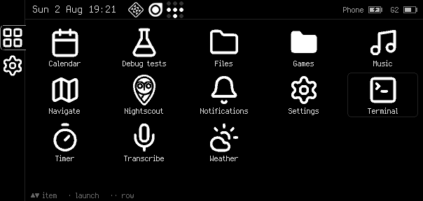
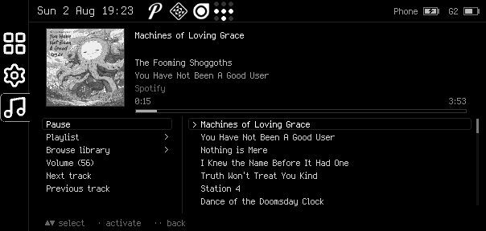
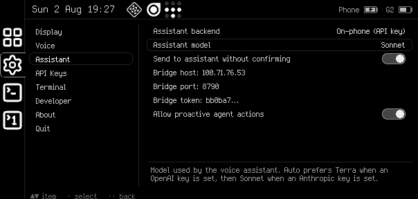
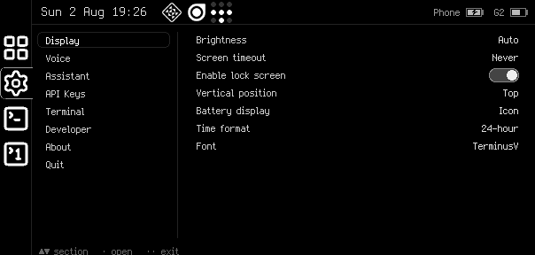

Faceclaw
An unofficial user interface for the Even Realities G2 smart glasses. Apps, a voice assistant, notifications and a watch remote — running from your Android phone.
Unofficial
Faceclaw is not made by, endorsed by, or supported by Even Realities. It comes with no warranty from them or from anyone. It runs on Android, and it requires installing custom firmware on the glasses — the app can install and uninstall that firmware for you, downloading the stock firmware from Even and applying patches generated from g2flash.
What it looks like




Features
- A voice assistant that wakes up when you say "Hey Even", transcribes text with an on-device model, OpenAI Whisper, ElevenLabs, or Soniox API, and responds to queries and commands using an onboard model (Qwen3 4B, slow) or with an Anthropic or OpenAI model (requires an API key), or using your own long-running OpenClaw agent.
- Multitasking, with an app-switcher sidebar and app launcher.
- Mostly-compatible with EvenHub apps.
- A lock screen; glasses lock automatically when you take them off and unlock when you unlock your phone.
- The full display. Full-screen apps can use the full 640x480 display area, rather than the 576x288 that EvenHub apps can use.
- Integration with Android notifications: a top bar that shows the same icons your phone does, popups when notifications arrive, and menu items to dismiss or use Android-app-provided custom actions like mark as read or quick reply.
- Terminal mirroring. Mirror terminal apps such as Claude Code or Codex CLI with g2mirror, view them on the glasses, and send them inputs with the voice assistant.
- Media player controls including playlist and media library navigation, compatible with most Android media players.
- Turn-by-turn directions (requires a Mapbox API token).
- Nightscout, an app for viewing blood-glucose data (requires a cloud server and API token).
- Power management: the glasses go to sleep properly when the screen is off, and wake when you double-tap the ring or speak the wakeword, allowing battery life similar to the stock Even app.
- Connection management with auto-reconnect, and autodetection of conflict with the official Even Realities app.
- A Wear OS watch app that replaces (and outdoes) the R1 ring: tap, swipe, hold and crown gestures, side buttons, app launching and window switching, voice or keyboard queries to the assistant with the reply on your wrist, typing into apps, and glasses status/lock/display control.
- On-phone screen mirroring with touch control: tap what you see on the mirror (sidebar icons, launcher cells), or use the phone's own touchpad, d-pad and Back/Menu buttons — the same spatial scheme as the watch — plus a compact ring simulator. A display-mode picker (576×288 band, 576×480 tall, or the full 640×480 panel with an auto-hiding sidebar) and a brightness slider with an Auto toggle sit beside the mirror.
- Bluetooth pairing that scans for nearby glasses and identifies each pair before connecting: model, frame shape, and colour decoded from the advertised serial (with product photos), left and right arms matched to each other by that serial, an estimated distance so the pair in your hand sorts first, and the optional R1 ring.
- Dual-language NativeScript architecture, with Java for the multithreaded Android API and bluetooth stack bits, Typescript for the bits you want to hack on.
Beyond the glasses
Watch remote
A Wear OS companion app turns the whole watch face into a touchpad that outdoes the R1 ring: swipes, crown scrolling, side buttons, app launching, and spoken or typed queries with the reply on your wrist.
EvenHub apps
Faceclaw runs EvenHub apps through an emulation layer. Install them from the Hub, or sideload your own by opening an .ehpk file on your phone.
Your own agent
Instead of calling an LLM API from the phone, the assistant can route queries to your own long-running OpenClaw agent, which also gets access to the glasses' tools.
Contributing
Be bold. Modify Faceclaw into the app that you want it to be for yourself, without worrying about whether other people will like your version — then, if you think your changes might be useful to others, open a pull request. Faceclaw is Free Software under the GPLv3. See the contributing notes for what to test before you send a change.